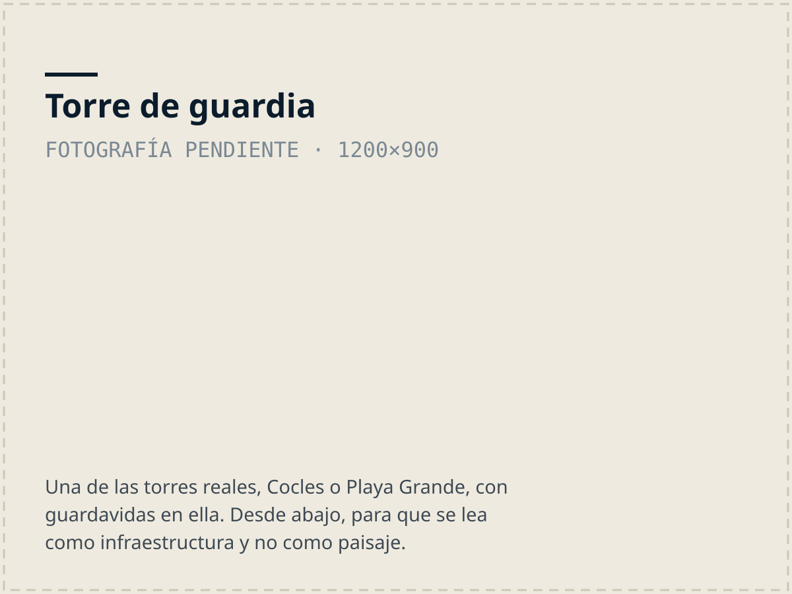

Puerto Viejo a Manzanillo · Limón
Salvando vidas en el Caribe Sur
Desde 2021 nunca murió nadie durante nuestras guardias. Somos una asociación comunitaria de salvamento acuático: patrullamos playas, formamos guardavidas y enseñamos a la comunidad a estar segura en el agua.
Antes de entrar al mar
Mapa de Seguridad
Corrientes de resaca, estaciones de salvamento y qué mirar antes de entrar al mar, playa por playa. Ábrelo en el teléfono.
Abrir el mapa →Última revisión: Sin revisar aún. Pregunta a un guardavidas antes de entrar al mar.

Y en la playa, busca la torre
El mapa no reemplaza a un guardavidas. Si no hay nadie en la torre, nadie está mirando el agua: pregunta antes de entrar, o no entres.
Cómo funciona el programa →Quiénes somos
Misión: Revolucionar la seguridad acuática en el Caribe Sur y cambiar el paradigma de los incidentes por ahogamiento.

Tres clubes, abiertos a la comunidad
Lifesaving, natación y apnea. Gratuitos, y se entra por el mismo formulario.
Sostener esto cuesta
Somos una organización voluntaria y autogestionada. Las clases de natación, la formación de guardavidas y el equipo de rescate se financian con donaciones y con el aporte de los negocios de la zona.